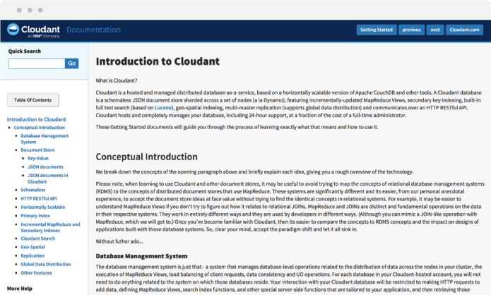
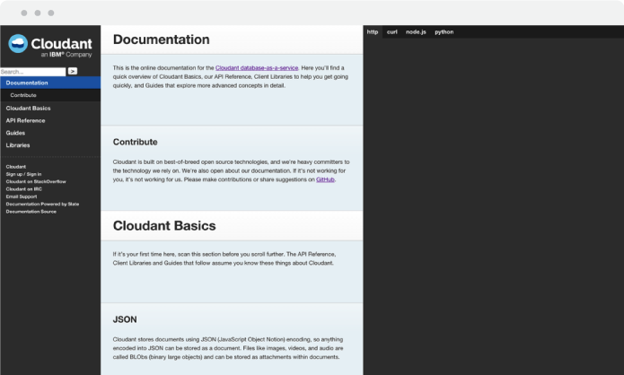

Documentation website for IBM Cloudant. Visit website here.
I redesigned the documentation website for IBM Cloudant. As part of a team of writers and engineers, my responsibility was to re-create the experience of how a user would explore the overview of Cloudant Basics, API Reference, and Client Libraries.
The website that existed included a two column layout: one column for the section and the other for the main content that included text and code snippets. After conducting a competitive analysis on other websites for developers, I noticed a common pattern of having a third column on the right exclusively for the code snippets.

Instead of including the code snippets in the actual text, we decided to accordingly align and designate them to the third column. This made sense because users would have the ability to toggle between languages in this column as opposed to switching in the text. Although this option would call for a more organized consumption of material, the problem of "wasted space" came up because not all pieces of text presented code snippets.
For the next round, a refined user experience and UI was in the works.

In the final iteration, we took into consideration the "wasted space" and decided to add in an icon that allows the user to toggle the third column open and close.